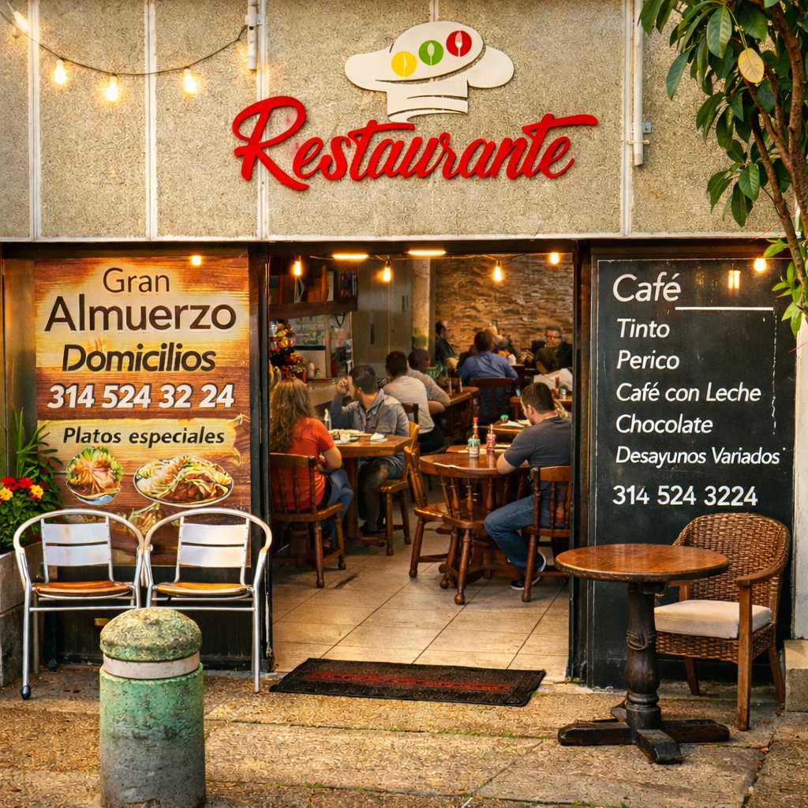

Bienvenidos al mejor restaurante tradicional. Nuestro administrador, Angel Felipe Ayala Méndez, te invita a disfrutar de una experiencia culinaria inolvidable con nuestro sazón colombiano y casero por nuestra cocinera Aura Stella Mendez.
Conoce los platos más deliciosos ofrecidos ofrecidos por Teusacá:
Observa nuestro plato estrella. (Esta imagen utiliza porcentajes para ajustar su tamaño relativo a la pantalla)

Y aquí un vistazo a nuestras instalaciones. (Esta imagen utiliza números exactos en píxeles para definir un tamaño fijo)

Si gusta revisar nuestro menu mas actualizado en formato pdf, por favor haga click aquí (no creado, solo es la muestra de la llamada en código).